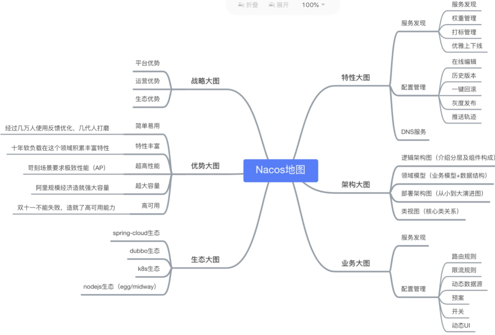
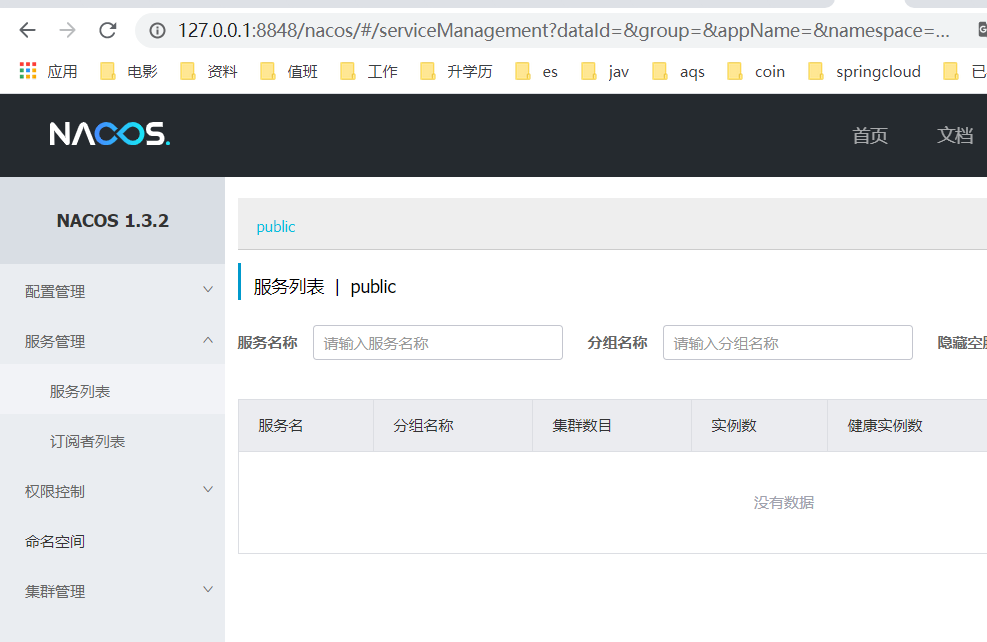
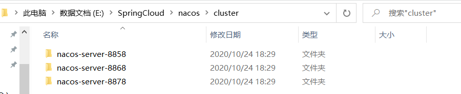
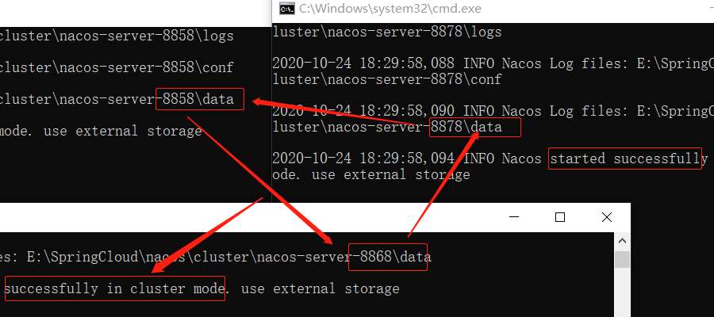
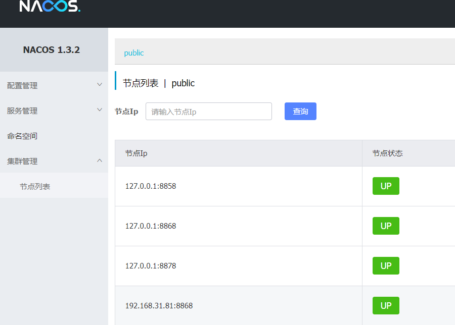

一、Nacos简介
Nacos 是构建以“服务”为中心的现代应用架构 (例如微服务范式、云原生范式) 的服务基础设施。
Nacos 的主要特性有：
- 1、服务发现和服务健康检测
简单的讲就是微服务的注册中心组件 - 2、动态配置服务
简单的讲就是微服务的配置中心组件 - 3、动态DNS服务
DNS解析服务，可配置路由的权重，实现中间层的负载均衡 - 4、服务及元数据管理
可视化管理服务的元数据、包括服务的描述、生命周期、健康状态、流量管理等等
可查看官网战略图：

官网地址：https://nacos.io/zh-cn/index.html
二、Nacos安装与使用
快速开始使用
1、下载
方式1、下载发行版
Nacos 的代码开源在Github 上，所以它的发行版也在上面。随便下载： .zip 和.tar.gz 其中一个即可
- 1、Github发行地址：https://github.com/alibaba/nacos/releases
Github在国内访问，速度是真的慢，所以速度慢的可以使用国内的gitee进行下载 - 2、Gitee发行地址：https://gitee.com/mirrors/Nacos/releases
Gitee下载下来是源码，需要自己编译安装，但是gitee 还有百度网盘的下载地址，在介绍页的最后有Baidu Netdisk点击即可下载，提取码是：rest。
注意这个网盘地址，可能会失效，如失效可自行去Gitee找最新的地址。
方式2、下载源码自己编译
这种方式我也是推荐的，github速度慢，源码可以在gitee上下载，每天同步一次。
# Github |
编译完成之后，生成的安装包在 distribution/target/目录下面有两个.zip 和.tar.gz的就是安装包了。解压即可。
2、启动
在上面下载或自己编译得到的压缩文件，自己动手解压之后，就可以启动了。
我记得我之前在1.0.0版本还是之前的哪个版本用过的，在windows下直接双击bin/startup.cmd即可运行。
但是我现在用的是最新版本：1.3.2这个版本nacos的启动模式默认是集群模式，所以双击启动会报错。
解决方法：
在Linux/Unix/Mac下
启动命令(standalone代表着单机模式运行，非集群模式): |
- 在启动的时候可以加参数：
-m standalone单机启动。 - 或者修改
bin/startup.sh,找到export MODE="cluster"改为：export MODE="standalone"即可。
在windows下
- 这个和上面的一样，启动加参数:
startup.cmd -m standalone - 或者修改bin目录下的：
startup.cmd文件找到set MODE="cluster"改为：set MODE="standalone"即可
3、访问Nacos
- 在上面步骤启动成功之后访问：http://127.0.0.1:8848/nacos/#/login
- 即可登陆到nacos管理界面,默认的账号和密码都是:
nacos - Nacos默认启动端口是
8848,这不就是珠穆朗玛峰的高度吗？

4、测试
启动之后我们看到nacos的管理界面有：
- 配置管理
这个就是配置中心了，随意配置 - 服务管理
注册中心的服务管理 - 权限控制
这个是nacos的用户角色管理 - 命名空间
不同的命名空间可以有不同的配置与服务，像生产环境、开发环境、测试环境的各种配置什么的就可以以命名空间隔开 - 集群管理
这个是nacos的高可用，集群列表
感觉都不算难，比较人性化，可以自己随便玩一玩，试一试。可以使用postman接口请求测试,或者使用curl
# 服务注册 |
当然，也是可以使用nacos 客户端进行测试的。
5、关闭服务
直接执行bin目录下的shutdown可执行文件即可。
|
三、Nacos数据持久化
nacos默认的数据是保存在本地文件中，其实Nacos也是提供配置让我们保存在Mysql中的。
我的环境：
- Nacos版本:
1.3.2 - Mysql版本:
mysql8.0
1、导入Mysql脚本
- 首先新建一个叫做:
nacos的数据库（名字随便取） - 然后在nacos的conf目录下，找到
nacos-mysql.sql把它导入到nacos数据库。
2、更新配置
- 修改nacos的conf目录下的
application.properties，的mysql配置 - 把注释打开，然后修改为你自己mysql的配置即可
### If use MySQL as datasource: |
更新完配置，照常启动即可。
四、Nacos集群
- Nacos的高可用，配置集群。其实配置集群非常简单
- 在nacos的conf目录有一个叫做
cluster.conf.example这个就是配置集群的模板文件。 - 打开发现里面只需要填写ip即可。我们可以修改它为
cluster.conf（也就是把后缀去掉）。 - 或者新增一个
cluster.conf，然后再里面写上各个节点的nacos地址即可。 - 如果是集群模式的话默认会去查找数据源，如果没有配置外置数据源则使用内置数据源,命令：
startup.sh -p embedded。 - 使用外置数据源：
startup.sh,所以，如果没有配置数据源，记得加参数：-p embedded。
1、在不同主机上运行nacos
如果在不同ip的主机上运行nacos,只需要添加cluster.conf文件里面每行写一个nacos所在的ip:port即可。
2、在一台电脑配置集群
没办法，太穷，资源有限，只能提供一台机器。所以只能在一台机器以不同端口启动的方式来配置集群。
打算的启动端口为：
- 8858
- 8868
- 8878
操作步骤
- 1、下载nacos的发行版.zip或.tag.gz随便一个。
- 2、新建一个文件夹为
cluster（随便取名，然后方便管理） - 3、解压上面下载的发行版，放到上面新建的
cluster文件夹，并重命名为：nacos-server-8858。 - 4、修改
nacos-server-8858配置文件下的application.properties，修改端口为8858。
Tip: 修改端口的配置项为：
server.port=8858,修改后面的数字即可。
- 5、在
nacos-server-8858下的conf目录新增cluster.conf,编辑内容如下：
127.0.0.1:8858 |
- 6、再从8858复制出两份，分别命名为
nacos-server-8868、nacos-server-8878。 - 7、分别修改复制出来的两个夹下的
application.properties端口为8868、8878 - 8、因为在
nacos-server-8858中已经新建了cluster.conf，所以其中两个复制出来的也自带了这个文件不需要修改。
示例图如下：

上面已经全部配置完成了，分别启动即可看到集群的情况。


自此集群就配置成功了，可以通过nginx 负载均衡